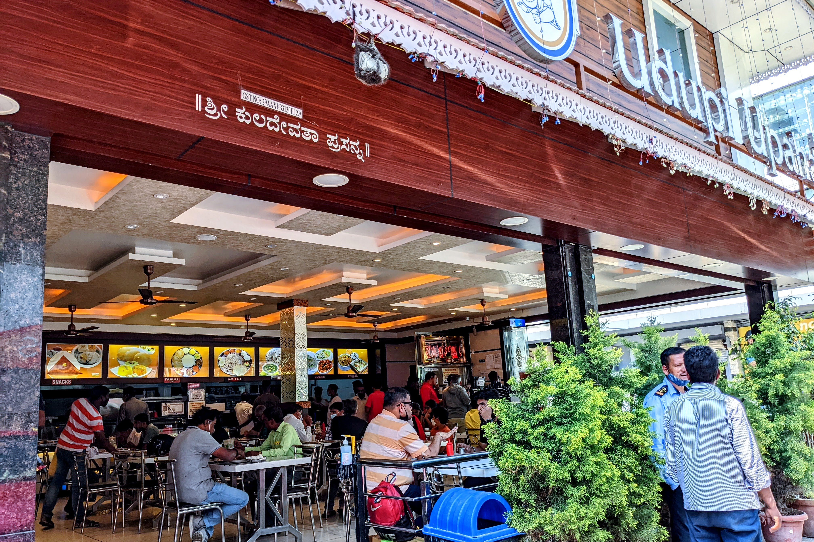
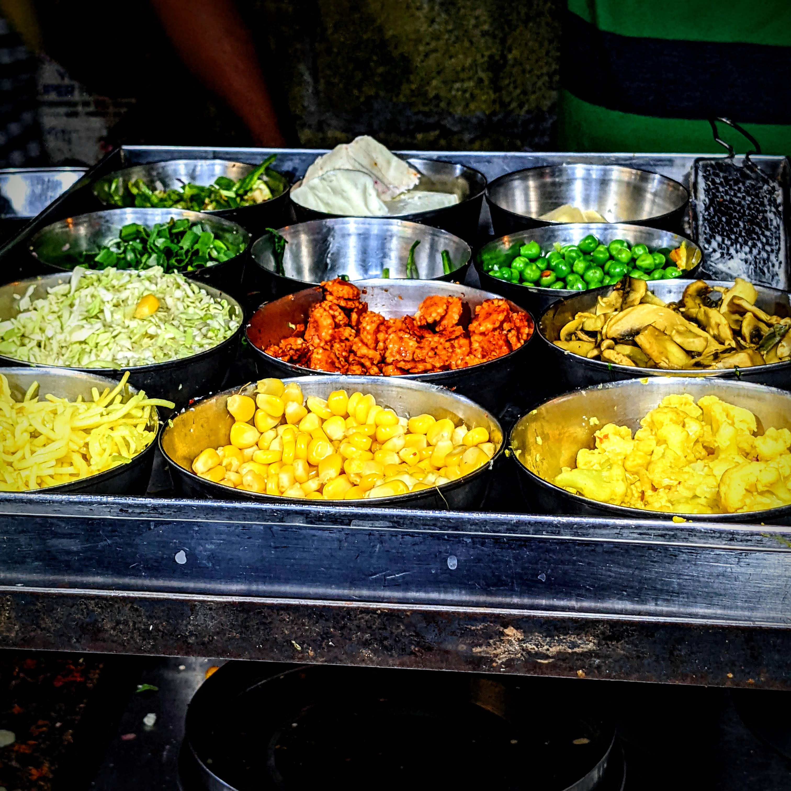
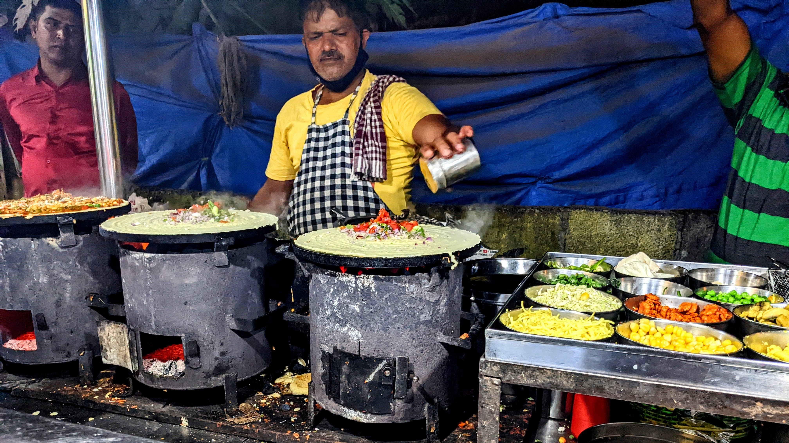
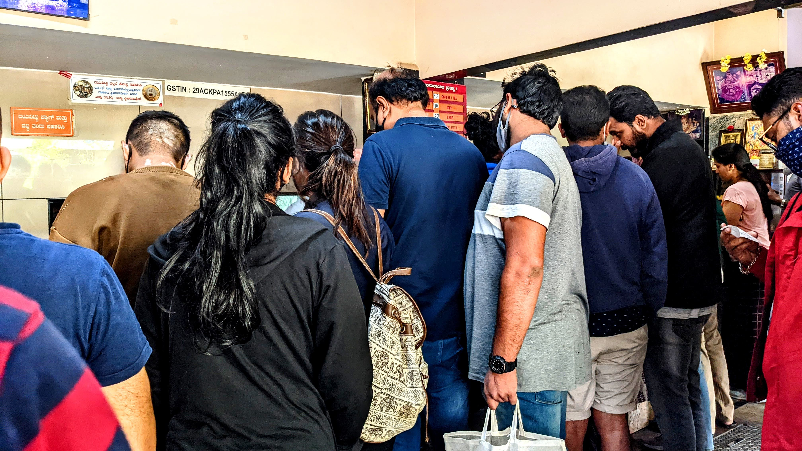
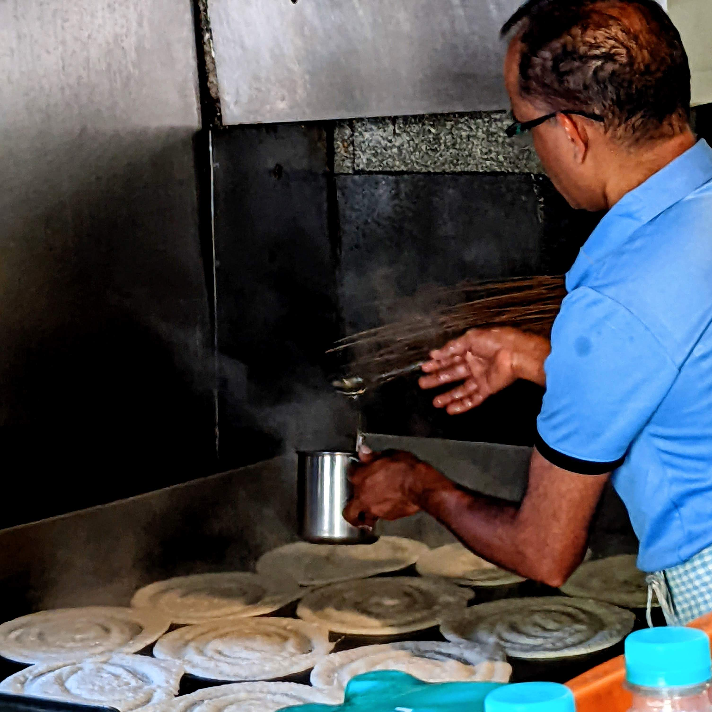
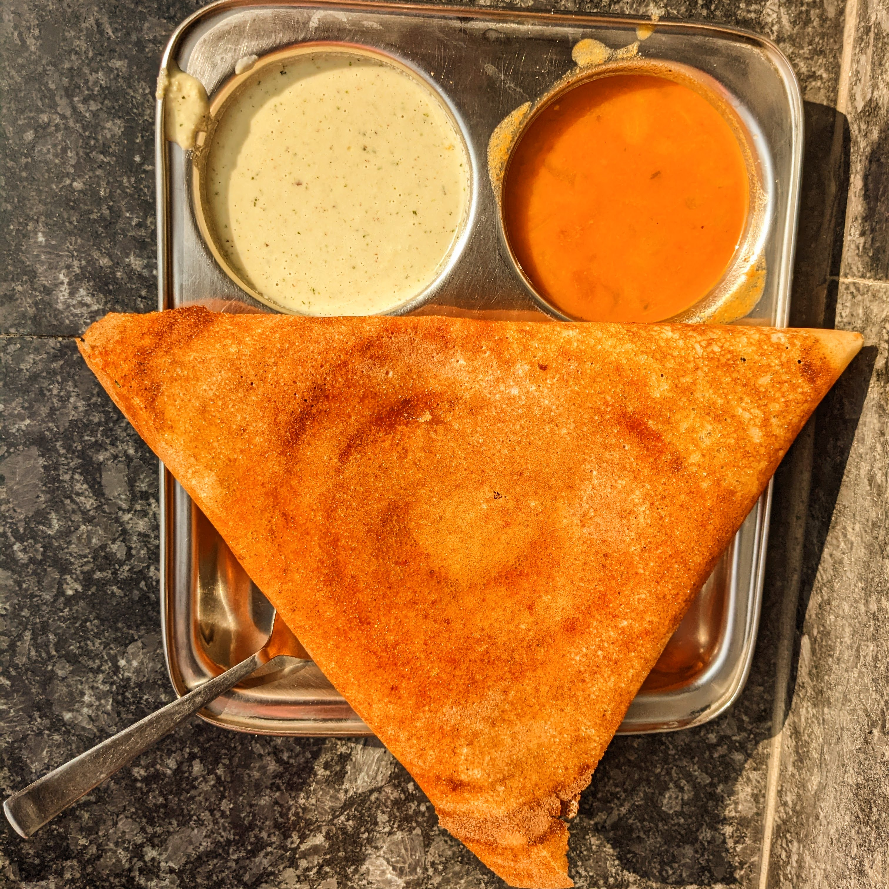

Udupi Upahar
Udupi is a town in Karnataka where many historians debate that dosa has originated from (more info in the origin section). Udupi is also known as a hub for many south indian foods and hence many south-indian cuisine restaurants include “Udupi” in their title. One such famous restaurant chain is the Udupi Upahar.

Although Udupi and Udupi-named restaurants are known for their south indian cuisine, they also serve other cuisines that one would find in an Indian restaurant such as north indian food, chinese food , etc. Given the close proximity of this restaurant to our house, this is where my family and I often visit to quench our thirst for a south indian dish, be it idli, dosa vada or a south indian thali.

As much as I would love to have hot dosa while sitting at the restaurant itself, the rush in this restaurant irrespective of it being a weekday or weekend is too risky in this covid situation. (The last time I ate food standing outside at a nearby place, I ended up getting covid). However, the point being made here is about the fame and love for these restaurants.
The dosa I received seemed to have been made in a rush, or maybe was crumpled on the way home. There is still the custom of placing the dosa on a banana leaf even in the packaging.

Restaurants usually keep 2 chutneys in the kitchen, one is a little dry/dense and the other is the watered down one as seen in the image, this custom however does not apply to all restaurants. The Udupi upahar I got my lunch from keeps only this watered down chutney. This chutney is not any less flavourful or tasting watered down, however it is harder to have a dosa with. The concept of keeping these different chutneys is that dosa usually requires a dense (गाढ़ा) chutney so it is easier to pick, but other dishes like idli, vada and khara bath (खारा बात- only to understand the pronunciation, south indian pronounce it is baath and not bhaath)(khara bath is aka upma) require a wetter chutney.
99 Dosa
As the name simply suggests, these stalls claim to serve 99 varieties of dosa, although some places do not serve 99 but I don’t think there is any necessity to count it. However the place I went to did have 99 varieties listed in the menu. It is pretty obvious that there isn’t much difference in many varieties. They’re just mix-and-match. The ingredient box, shown below, has about 12 ingredients, few of which are just veggies so they are added to almost all types of dosas.

These are roadside stalls so obviously there isn’t any guarantee of hygiene, but these places are visited for their taste. Although honestly speaking there isn’t much difference in the tastes of the different dosas, but they taste very different from the other “regular” dosas that we get in restaurants. There can be two reasons according to me, the first reason is that the main sauce/gravy that he uses is the same for all dosas, so the base flavour is the same for all. The second reason is that the fillings get so hot that the only taste or feeling is of the tongue burning and us losing our taste buds, and obviously following that we can’t taste anything for a while.
All the stalls that I have been to over the years serve two kinds of chutney, coconut chutney and mint chutney, and they are both absolutely delicious and complements the flavourful dosa very well. Dipping the dosa in the chutney properly cools it off and doesn’t burn my finger so much.

Three burners is good enough for a stall. The person making the dosas is obviously pretty good at managing the three stoves at once. There’s always at least two people operating such a stall, one person makes the dosas while the other takes the orders, keeps a track of the money, plates the dosas and handles the chutney (most people often ask for a second serving of chutney. This particular stall’s owner also kept a couple of chairs around the stall for people’s ease. People usually come here in a group and order a variety of dosas and share them to taste the various types they have to offer.
S. N. Refreshments
S. N. Refreshments is a small place with a big crowd. This is a place that i have been visiting from as long back as i can remember, and this place has since been my favourite, be it for dosa, for chutney, kesari bhaath, idli, vada. No other place has impressed me this much, not that other places don’t have good dosas, but this one feels perfect. There is no place to sit and eat except a small slab which is just the extension of the structure's plinth.

This is the rush here. Although it is not sooo many people, the place is smaller than most restaurants which causes such a chaos, that too on a Sunday. There are long queues for ordering food and then waiting for receiving their dish. Like any classic restaurant, one person from the group gives the order while the others hold a place for themselves at the tables. People come from far just to have dosa, that’s the craze for having Dosas in Bangalore. Now just because the rush is so high, it does not imply that the serving time is very long, it’s actually a maximum of 10 minutes, that too is usually to place the order.

The scene of the dosas being made. 11 dosas being prepared at once… What more can I say for this. This
is true experience, to handle so many dosas at once, the speed required for this is of the pro-level.
The dosas here, especially on such a busy Sunday morning, are not prepared based on the number of orders
placed. He just makes a batch and they all sell out. And the way he adds ghee, you’ll probably get
cholesterol just watching it, but it is delicious, and that is all that matters.
The broom seen in the background is what is used to wipe the cooking surface. The surface needs to be
cooled off before pouring batter, so the cook pours water on the surface after each batch and wipes it
off with the broom which removes the water along with any batter stuck to the surface.
Watching him in action is very mesmerising.
Thick and soft on the inside, crispy on the outside, this dosa takes me into euphoria. And the chutney is just unmatched. I don’t like sambar so I don’t take it, but one can always ask for it. One will only understand what I’m saying after they have tried it.
Ananya Veg

Sunday morning my uncle took his family and me to a south indian restaurant for breakfast. This place was new to me. The vada was really spongy and nice, and the dosa was nice but it wasn’t that great. It was better than the one from Udupi Upahar though, it even looks so much more beautiful. Moreover the morning glow of the sun glistening the ghee/butter of dosa really wakes up the eye. It had slightly less salt. People often like to sleep till late in the morning on Sundays so maybe that could be a reason why there were very less people there. I often absolutely love the filter coffee of these south indian restaurants but I didn’t seem to like it that much as I do at other places.